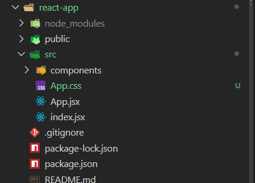
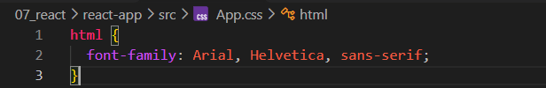
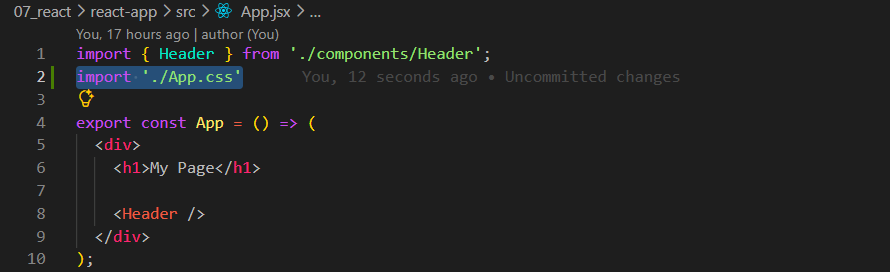
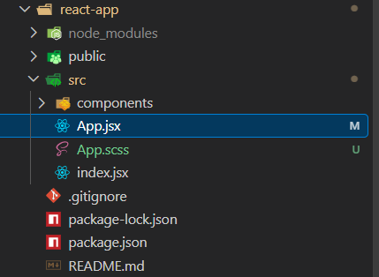
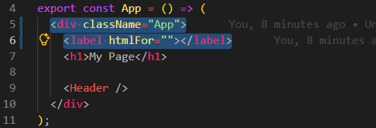
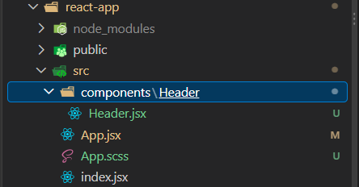
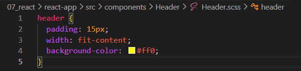

Intro:
Agora iremos discutir sobre como conectar estilos aos componentes React.
Geralmente, como um componente é uma peça independente da interface, seus estilos podem ficar localizados ao lado dele, facilitando a organização do projeto.
Agora iremos discutir sobre como conectar estilos aos componentes React.
Geralmente, como um componente é uma peça independente da interface, seus estilos podem ficar localizados ao lado dele, facilitando a organização do projeto.
Para iniciar, iremos continuar em nosso projeto "react-app".
Dentro dele, iremos acessar nosso arquivo App.jsx e criar um arquivo chamado App.css.
Dentro do diretório src, iremos criar um arquivo chamado App.css.

Feito isso, poderemos escrever nossos estilos, que serão aplicados assim que importarmos o arquivo. Por enquanto, iremos definir a fonte da página inteira e aplicar um efeito para teste, como no exemplo:

Precisamos voltar ao nosso arquivo JSX e importar o arquivo CSS. Então, iremos voltar para nosso App.jsx, que ficará da seguinte forma:

Para conectarmos um arquivo CSS ao arquivo do componente, usamos import seguido do caminho para esse arquivo.
Obs.: nesse caso, incluímos a extensão do arquivo no caminho da importação.
Agora que sabemos como importar CSS, iremos ver como podemos importar SCSS.
Iremos começar modificando a extensão do nosso arquivo CSS para .scss, ficando da seguinte forma:

Feito isso, nossos estilos não irão funcionar imediatamente, pois o Create React App precisa do pacote Sass para processar arquivos SCSS. Portanto, iremos precisar instalar um pacote adicional.
Para isso, podemos abrir um novo terminal, usar o comando cd com o caminho da pasta do projeto em que desejamos fazer a instalação do pacote e executar o comando npm i sass.
Obs.: o Sass deve ser instalado na pasta do projeto em que você pretende utilizá-lo.
Então, fizemos da seguinte forma:
C:\Users\david\Documents\00---Mate-Academy---Full-Stack\07_react\react-app> npm i sass
Acessamos a pasta do projeto em que queremos utilizar o Sass e, por fim, executamos o comando npm i sass.
Após a instalação ser finalizada, precisamos reiniciar a execução do projeto para que ele reconheça o pacote recém-instalado.
Para fazer isso, basta irmos ao terminal em que executamos o comando npm start do projeto react-app, pressionar CTRL + C para interromper a execução e, em seguida, executar npm start novamente.
Feito isso, poderemos utilizar arquivos SCSS em nosso projeto, assim como já utilizávamos arquivos CSS.
Para podermos adicionar uma classe, podemos acessar nosso arquivo App.jsx. Nele, temos uma div que havíamos criado na aula anterior. Basta adicionarmos o atributo className, como fazemos com o atributo class no HTML, ficando da seguinte forma:
import { Header } from './components/Header';
import './App.scss'
export const App = () => (
< div className="App">
< h1>My Page< /h1>
< Header />
< /div>
);
No JSX, usamos className em vez de class para definir uma classe CSS. Isso acontece porque o JSX utiliza propriedades próprias para representar os atributos HTML. O mesmo ocorre com o atributo for da tag label, que usamos como htmlFor no JSX.
Exemplo:
export const App = () => ( < divclassName="App"> < labelhtmlFor="">< /label> < h1>My Page< /h1> < Header /> < /div> );

Podemos lembrar que a tag label possui o atributo for no HTML, usado para associar o rótulo a um campo de formulário. No JSX, usamos htmlFor para fazer essa associação. Dentro das aspas, precisamos informar o id do campo correspondente. Portanto, é importante lembrar:
class => className
for => htmlFor
Outra observação importante é sobre a estrutura de pastas. Como o App.jsx é o componente principal da nossa aplicação, podemos importar nele os estilos gerais da aplicação. Já os estilos de componentes individuais podem ficar ao lado de seus respectivos componentes, facilitando a organização. Geralmente, cada componente é colocado em um diretório com seu nome, junto de seus arquivos relacionados.
Ou seja, dentro do diretório components, podemos criar um novo diretório chamado Header. Dentro dele, colocaremos o arquivo do componente Header.jsx e seus arquivos de estilo. Dessa forma, conseguimos manter cada componente organizado em seu devido local. Ex.:

Dessa forma, podemos observar que agora temos, dentro do diretório components, uma pasta exclusiva para o Header, onde ficarão o componente e seus estilos. Após organizarmos os arquivos, o caminho da importação no App.jsx poderá ser atualizado automaticamente pelo VS Code, dependendo da configuração utilizada. Nesse caso, ficará da seguinte forma:
import { Header } from './components/Header/Header';
Agora, dentro do diretório Header, iremos criar um novo arquivo para adicionar os estilos, que chamaremos de Header.scss.
Antes de especificarmos os estilos, precisamos conectá-los ao componente. Para isso, iremos ao arquivo Header.jsx e usaremos import, ficando da seguinte forma:
import './Header.scss'
export const Header = () => (
< header> Page Header < /header>
);
Agora podemos voltar ao arquivo Header.scss e testar uma modificação selecionando a tag header, ficando da seguinte forma:
header {
padding: 15px;
width: fit-content;
background-color: #ff0;
}
